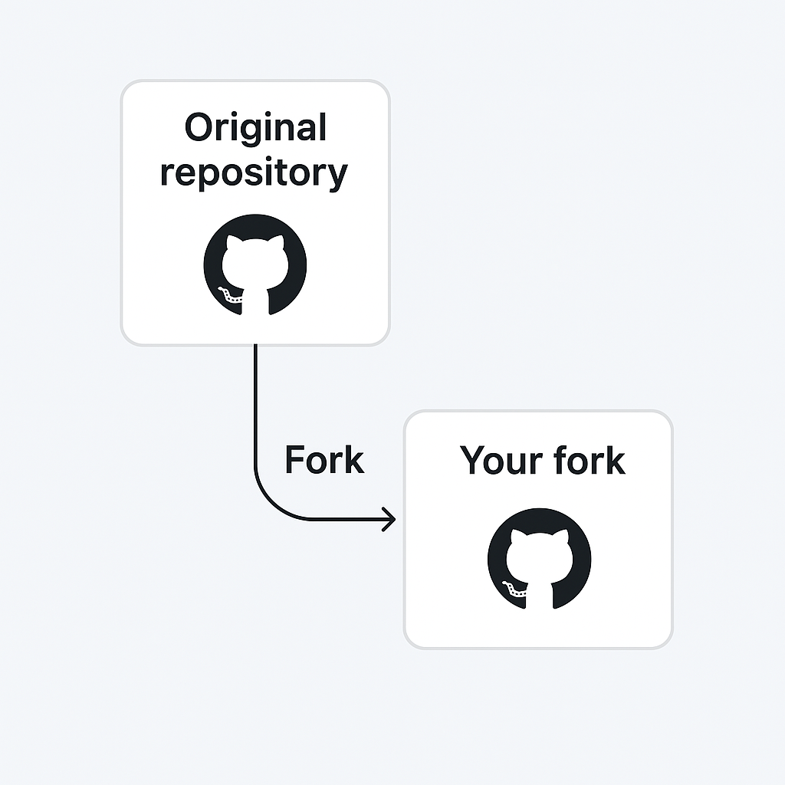

GitHub Fork
1. What is a Fork?
A fork is a personal copy of someone else's repository on your GitHub account. It allows you to freely experiment with changes without affecting the original project.
Forks are used to propose changes via pull requests or to use someone else's project as a starting point.
2. How to Fork a Repository
To fork a repository:
- Go to the original repository on GitHub
- Click the Fork button in the top right
- GitHub creates a copy in your account
3. Clone Your Fork
After forking, clone the repository to your local system:
git clone https://github.com/your-username/forked-repo.gitThis creates a local copy of your fork.
4. Add Remote to Original Repo (Upstream)
To keep your fork updated with the original repo, first add the original as a new remote:
git remote add upstream https://github.com/original-user/original-repo.gitgit remote -vThis shows both origin (your fork) and upstream (original repo).
5. Sync Your Fork
To sync your fork with the latest changes from the original repository:
git fetch upstreamgit checkout maingit merge upstream/mainThen push the updated branch to your fork:
git push origin main6. Contribute via Pull Request
Make your changes in a new branch:
git checkout -b my-featureCommit and push the branch:
git push origin my-featureThen go to your GitHub fork and click Compare & pull request to propose changes to the original repository.